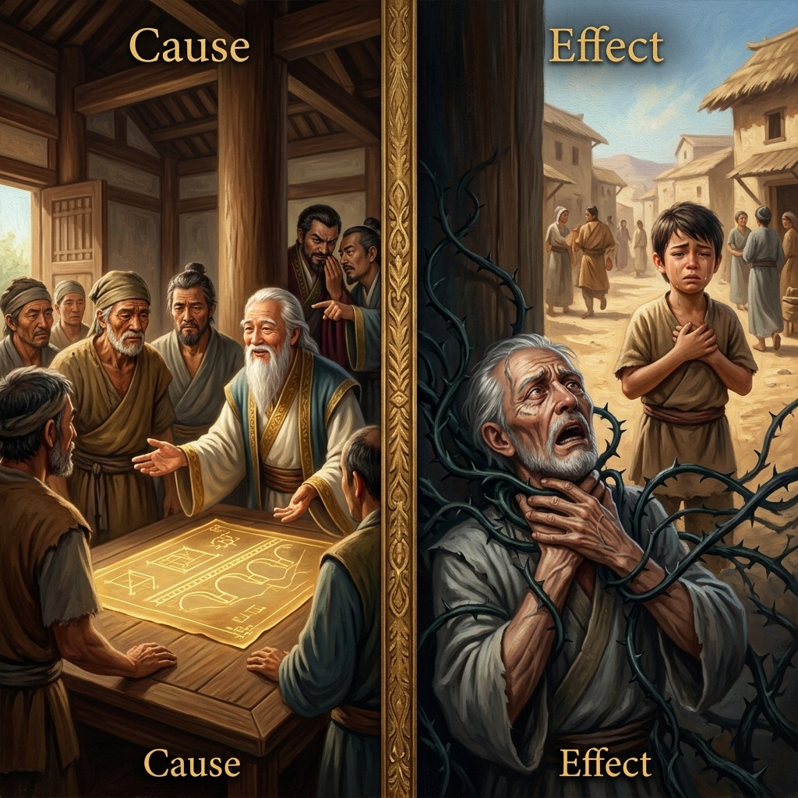
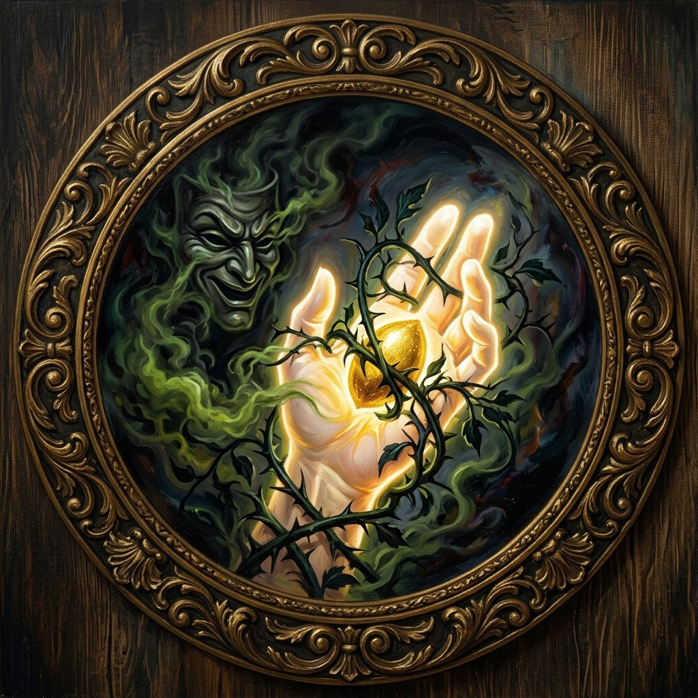
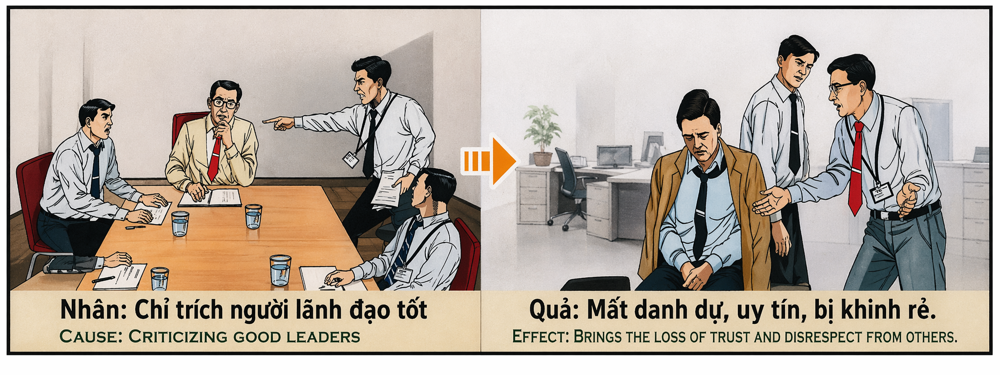

El Juicio de los Guías y la Cosecha del Silencio The Judgment of Guides and the Harvest of Silence La prova delle guide e la raccolta del silenzio 向导的审判与沉默的收获 محاكمة المرشدين وحصاد الصمت Суд над проводниками и жатва молчания Der Prozess gegen die Führer und die Ernte des Schweigens Le procès des guides et la moisson du silence ガイドの試練と沈黙の収穫 O Julgamento dos Guias e a Colheita do Silêncio Sự Phán Xét Các Bậc Dẫn Đường Và Mùa Vụ Câm Lặng
"Quien corta las alas del mensajero condena su propio vuelo al abismo; pues la lengua que difama al guía benevolente y asesina su noble siembra, cosechará una garganta de piedra y renacerá en el destierro del silencio absoluto." "He who clips the messenger's wings condemns his own flight to the abyss; for the tongue that slanders the benevolent guide and murders his noble sowing shall harvest a throat of stone and be reborn into the exile of absolute silence." "Chi taglia le ali del messaggero condanna la propria fuga nell'abisso; perché la lingua che diffama la guida benevola e uccide la sua nobile semina, mieterà una gola di pietra e rinascerà nell'esilio del silenzio assoluto." “砍断使者翅膀的人注定了自己飞向深渊；因为诽谤仁慈向导、谋杀其高贵播种者的舌头，将收获石头的喉咙，并将在绝对沉默的放逐中重生。” "من يقطع جناحي الرسول يدين هروبه إلى الهاوية؛ لأن اللسان الذي يشوه سمعة المرشد المحسن ويقتل زرعه النبيل، سيحصد حنجرة من الحجر وسيولد من جديد في نفى الصمت المطلق." «Тот, кто подрезает крылья посланнику, обрекает свой полет в бездну; ибо язык, порочащий доброжелательного наставника и убивающий его благородное семя, пожнет каменную глотку и возродится в изгнании абсолютного молчания». „Wer dem Boten die Flügel schneidet, verurteilt seine eigene Flucht in den Abgrund; denn die Zunge, die den gütigen Führer verleumdet und seinen edlen Samen ermordet, wird eine steinerne Kehle ernten und in der Verbannung des absoluten Schweigens wiedergeboren.“ "Celui qui coupe les ailes du messager condamne sa propre fuite vers l'abîme ; car la langue qui diffame le guide bienveillant et assassine sa noble semence récoltera une gorge de pierre et renaîtra dans le bannissement du silence absolu." 「使者の翼を切る者は、自らの深淵への逃亡を非難する。慈悲深い指導者を中傷し、その高貴な種まきを殺す舌は、石の喉を刈り取り、絶対的な沈黙の追放の中で生まれ変わるだろう。」 “Aquele que corta as asas do mensageiro condena a sua própria fuga para o abismo; pois a língua que difama o guia benevolente e assassina a sua nobre sementeira, colherá uma garganta de pedra e renascerá no banimento do silêncio absoluto.” "Kẻ chặt đứt đôi cánh của người truyền tin sẽ tự kết án chuyến bay của mình xuống vực sâu; bởi chiếc lưỡi vu khống bậc dẫn đường nhân từ và tiêu diệt hạt giống lành của họ sẽ gặt hái một vòm họng bằng đá, rồi tái sinh trong cõi lưu đày của sự câm lặng tuyệt đối."
En el tejido social y espiritual que sostiene a la humanidad, existen almas llamadas a ser faros: guías y líderes benevolentes que proponen sendas de alivio, protección y crecimiento colectivo. Cuando un líder de intenciones limpias presenta un proyecto —sea un canal de agua, un refugio, un granero público o una enseñanza de sabiduría—, está abriendo un portal de mérito y elevación para toda la comunidad. Sin embargo, en el reverso de esta luz acecha un veneno sutil y devastador: la crítica maliciosa y el sabotaje impulsados por el orgullo, la envidia o el mezquino interés personal.
Criticar a un buen guía y asesinar sus nobles propuestas mediante la calumnia o el murmullo malintencionado es una transgresión de extrema gravedad. El detractor no solo daña la reputación de un inocente, sino que corta el flujo de auxilio destinado a miles de seres desamparados. Quien utiliza su influencia o su elocuencia para envenenar la mente colectiva y hacer que el pueblo rechace el bien común, asume sobre sus hombros el dolor de cada alma que quedó desprotegida por culpa de su sabotaje. En la balanza cósmica, el asesino de una propuesta de vida es cómplice directo de las muertes y del hambre que su sabotaje provocó.
Esta siembra de calumnia y obstrucción mental genera una retribución kármica directa sobre el propio canal de la comunicación y de la vida: la garganta y la capacidad de expresión. Al haber utilizado la palabra para estrangular el bien común y asfixiar la propuesta del mensajero sabio, la física del karma responde estrangulando el propio flujo energético del ofensor. El cerebro, el sistema nervioso y el órgano vocal sufren un colapso. En esta misma existencia, este bloqueo se manifiesta físicamente como afecciones crónicas y severas en las cuerdas vocales, tumores o una parálisis progresiva que devora la voz y la reduce a un gemido inútil.
En la siguiente encarnación, este karma se amplifica naciendo en un estado de mudez total y absoluta incomunicación. El alma renace con un intelecto capaz de concebir soluciones y percibir la verdad, pero atrapada en una garganta sellada como una piedra fría. La mayor tortura de este destino es el calvario del conocimiento impotente: el individuo ve a su comunidad cometer errores fatales que él sabe perfectamente cómo resolver, pero es incapaz de articular una sola palabra para advertirles o guiarlos. Su voz fue apagada por el cosmos porque en su pasado la usó para apagar la voz del que traía la salvación.
Within the social and spiritual fabric that sustains humanity, there exist souls called to be beacons: benevolent guides and leaders who propose paths of relief, protection, and collective growth. When a leader of pure intentions presents a project—be it a water canal, a shelter, a public granary, or a teaching of wisdom—they open a portal of merit and elevation for the entire community. However, on the reverse of this light lurks a subtle and devastating poison: malicious criticism and sabotage driven by pride, envy, or petty self-interest.
To criticize a good guide and murder their noble proposals through slander or ill-intentioned whispering is a transgression of extreme gravity. The detractor not only damages the reputation of an innocent person but cuts off the flow of aid destined for thousands of helpless beings. He who uses his influence or eloquence to poison the collective mind and cause the people to reject the common good assumes upon his shoulders the pain of every soul left unprotected due to his sabotage. On the cosmic scales, the murderer of a proposal of life is a direct accomplice to the deaths and hunger that his sabotage caused.
This sowing of slander and mental obstruction generates a direct karmic retribution upon the very channel of communication and life: the throat and the capacity for expression. Having used the word to strangle the common good and suffocate the wise messenger's proposal, the physics of karma responds by strangling the offender's own energetic flow. The brain, nervous system, and vocal organ suffer a collapse. In this same existence, this blockage physically manifests as chronic and severe conditions in the vocal cords, tumors, or a progressive paralysis that devours the voice, reducing it to a useless moan.
In the next incarnation, this karma is amplified by being born into a state of total muteness and absolute incommunicability. The soul is reborn with an intellect capable of conceiving solutions and perceiving the truth, but trapped within a throat sealed like a cold stone. The greatest torture of this destiny is the ordeal of impotent knowledge: the individual watches his community make fatal mistakes that he knows perfectly how to solve, yet is unable to articulate a single word to warn or guide them. His voice was silenced by the cosmos because in his past he used it to silence the voice of the one who brought salvation.
Inel tessuto sociale e spirituale che sostiene l'umanità, ci sono anime chiamate ad essere fari: guide e leader benevoli che propongono percorsi di sollievo, protezione e crescita collettiva. Quando un leader dalle intenzioni pure presenta un progetto – sia esso un canale d’acqua, un rifugio, un granaio pubblico o un insegnamento di saggezza – sta aprendo un portale di merito ed elevazione per l’intera comunità. Tuttavia, dietro questa luce si nasconde un veleno subdolo e devastante: la critica maliziosa e il sabotaggio guidati dall’orgoglio, dall’invidia o dal meschino interesse personale.
Criticare una buona guida e assassinare i suoi nobili propositi con calunnie o mormorii maligni è una trasgressione gravissima. Il detrattore non solo danneggia la reputazione di una persona innocente, ma taglia anche il flusso degli aiuti destinati a migliaia di esseri indifesi. Chiunque usi la sua influenza o la sua eloquenza per avvelenare la mente collettiva e far sì che la gente rifiuti il bene comune, si carica sulle spalle il dolore di ogni anima rimasta senza protezione a causa del suo sabotaggio. Nell'equilibrio cosmico, l'assassino di una proposta di vita è complice diretto delle morti e della fame che il suo sabotaggio ha provocato.
Questa semina di calunnie e di ostruzione mentale genera una retribuzione karmica diretta sul canale stesso della comunicazione e della vita: la gola e la capacità di espressione. Avendo usato la parola per strangolare il bene comune e soffocare la proposta del saggio messaggero, la fisica del karma risponde soffocando il flusso energetico dell'autore del reato. Il cervello, il sistema nervoso e l’organo vocale collassano. In questa stessa esistenza, questo blocco si manifesta fisicamente come patologie croniche e gravi alle corde vocali, tumori o una paralisi progressiva che divora la voce e la riduce a un gemito inutile.
Nella successiva incarnazione questo karma viene amplificato, nascendo in uno stato di totale mutismo e assoluta mancanza di comunicazione. L'anima rinasce con un intelletto capace di concepire soluzioni e percepire la verità, ma intrappolato in una gola sigillata come una pietra fredda. La tortura più grande di questo destino è la prova di una conoscenza impotente: l'individuo vede la sua comunità commettere errori fatali che sa perfettamente come risolvere, ma non è in grado di articolare una sola parola per avvertirla o guidarla. La sua voce era ovattata dal cosmo perché nel suo passato la usava per attutire la voce di colui che portava la salvezza.
我在维持人类生存的社会和精神结构中，有一些灵魂被称为灯塔：仁慈的向导和领导者，提出救济、保护和集体成长的道路。当一个具有清洁意图的领导者提出一个项目时——无论是一条水渠、一个庇护所、一个公共粮仓，还是一个智慧的教导——他正在为整个社区打开一个功绩和提升的门户。然而，在这光芒的背后潜藏着一种微妙而毁灭性的毒药：由骄傲、嫉妒或狭隘的私利驱动的恶意批评和破坏。
通过诽谤或恶意诽谤来批评一位善导，暗杀他的崇高主张，是极其严重的过犯。诽谤者不仅损害了无辜者的名誉，还切断了向成千上万无助者提供的援助。任何人利用他的影响力或口才来毒害集体思想，使人民拒绝共同利益，他就会承担起每一个因他的破坏而得不到保护的灵魂的痛苦。在宇宙平衡中，生命求婚的凶手是他的破坏所造成的死亡和饥饿的直接同谋。
这种诽谤和精神障碍的播下，会在沟通和生命的通道：喉咙和表达能力上产生直接的业报。在用这个词来扼杀公共利益并窒息明智使者的提议之后，业力物理学的反应是扼杀犯罪者自己的能量流。大脑、神经系统和发声器官崩溃。在同一存在中，这种阻塞在身体上表现为声带、肿瘤或进行性麻痹的慢性和严重病症，吞噬声音并将其减少为无用的呻吟。
在下一个转世中，这种业力会被放大，出生在完全沉默和绝对缺乏沟通的状态中。灵魂重生，具有能够想出解决方案并感知真理的智力，但却被困在像冰冷的石头一样封住的喉咙里。这种命运的最大折磨是无能知识的考验：个人看到他的社区犯了致命的错误，他完全知道如何解决，但无法用一个词来警告或指导他们。他的声音被宇宙压制住了，因为在他的过去，他用宇宙压制了那位带来救赎的人的声音。
أنافي النسيج الاجتماعي والروحي الذي يدعم الإنسانية، هناك أرواح مدعوة لتكون منارات: مرشدين وقادة خيرين يقترحون مسارات الإغاثة والحماية والنمو الجماعي. عندما يقدم زعيم ذو نوايا نظيفة مشروعا - سواء كان قناة مياه، أو مأوى، أو مخزن حبوب عام، أو تعليم الحكمة - فإنه يفتح بوابة الجدارة والارتقاء للمجتمع بأكمله. ومع ذلك، على ظهر هذا الضوء يكمن سم خفي ومدمر: النقد الخبيث والتخريب المدفوع بالفخر أو الحسد أو المصلحة الذاتية التافهة.
إن انتقاد المرشد الصالح واغتيال مقترحاته النبيلة بالقدح أو التذمر الخبيث يعد انتهاكا خطيرا للغاية. لا يؤدي المنتقد إلى الإضرار بسمعة شخص بريء فحسب، بل يقطع أيضًا تدفق المساعدات الموجهة إلى الآلاف من الكائنات العاجزة. ومن يستخدم نفوذه أو بلاغته لتسميم العقل الجمعي وجعل الناس يرفضون الصالح العام، يحمل على عاتقه آلام كل روح تركت دون حماية بسبب تخريبه. في التوازن الكوني، القاتل الذي يقترح الحياة هو شريك مباشر في الوفيات والجوع الذي سببه تخريبه.
إن زرع الافتراء والعرقلة العقلية هذا يولد انتقامًا كارميًا مباشرًا على قناة الاتصال والحياة نفسها: الحلق والقدرة على التعبير. بعد أن استخدمت الكلمة لخنق الصالح العام وخنق اقتراح الرسول الحكيم، تستجيب فيزياء الكارما عن طريق خنق تدفق الطاقة الخاص بالمذنب. انهيار الدماغ والجهاز العصبي والأعضاء الصوتية. وفي هذا الوجود نفسه، يتجلى هذا الانسداد جسديًا على شكل حالات مزمنة وشديدة في الحبال الصوتية، أو أورام، أو شلل تدريجي يلتهم الصوت ويحوله إلى أنين عديم الفائدة.
في التجسد التالي، يتم تضخيم هذه الكارما، حيث تولد في حالة من الصمت التام والافتقار التام إلى التواصل. تولد الروح من جديد بعقل قادر على تصور الحلول وإدراك الحقيقة، ولكنها محاصرة في حلق مغلق مثل حجر بارد. أعظم عذاب لهذا المصير هو محنة المعرفة العاجزة: يرى الفرد مجتمعه يرتكب أخطاء فادحة يعرف جيدا كيفية حلها، لكنه غير قادر على النطق بكلمة واحدة لتحذيرهم أو إرشادهم. كان صوته مكتومًا بالكون، لأنه استخدمه في الماضي لكتم صوت من جلب الخلاص.
Яв социальной и духовной структуре, поддерживающей человечество, есть души, призванные быть маяками: доброжелательные наставники и лидеры, предлагающие пути облегчения, защиты и коллективного роста. Когда лидер чистых намерений представляет проект – будь то водный канал, приют, общественное зернохранилище или учение мудрости – он открывает портал заслуг и возвышения для всего сообщества. Однако за этим светом скрывается тонкий и разрушительный яд: злонамеренная критика и саботаж, движимые гордостью, завистью или мелочным корыстью.
Критиковать хорошего наставника и уничтожать его благородные предложения клеветой или злонамеренным ропотом — это чрезвычайно серьёзный проступок. Клеветник не только наносит ущерб репутации невиновного человека, но и перекрывает поток помощи, предназначенной тысячам беспомощных существ. Тот, кто использует свое влияние или свое красноречие, чтобы отравить коллективный разум и заставить людей отвергнуть общее благо, берет на свои плечи боль каждой души, оставшейся незащищенной из-за его саботажа. В космическом балансе убийца, предложивший жизнь, является прямым соучастником смертей и голода, вызванных его саботажем.
Этот посев клеветы и умственных препятствий порождает прямое кармическое возмездие на самом канале общения и жизни: горле и способности к самовыражению. Использовав слово, чтобы задушить общее благо и задушить предложение мудрого посланника, физика кармы отвечает удушением собственного энергетического потока обидчика. Мозг, нервная система и голосовой орган разрушаются. В этом же существовании эта блокада проявляется физически в виде хронических и тяжелых заболеваний голосовых связок, опухолей или прогрессивного паралича, который пожирает голос и сводит его к бесполезному стону.
В следующем воплощении эта карма усиливается, рождаясь в состоянии тотальной немоты и абсолютного отсутствия общения. Душа возрождается с интеллектом, способным находить решения и воспринимать истину, но оказывается в ловушке в горле, запечатанном, как холодный камень. Величайшая пытка этой судьбы — это испытание бессильным знанием: человек видит, как его сообщество совершает фатальные ошибки, которые он прекрасно знает, как исправить, но не может сформулировать ни единого слова, чтобы предупредить или направить их. Его голос был заглушен космосом, потому что в прошлом он использовал его, чтобы заглушить голос того, кто принес спасение.
Ichim sozialen und spirituellen Gefüge, das die Menschheit trägt, gibt es Seelen, die dazu berufen sind, Leuchttürme zu sein: wohlwollende Führer und Führer, die Wege der Erleichterung, des Schutzes und des kollektiven Wachstums vorschlagen. Wenn ein Leiter mit reinen Absichten ein Projekt vorstellt – sei es ein Wasserkanal, ein Tierheim, ein öffentlicher Getreidespeicher oder eine Weisheitslehre –, öffnet er ein Tor der Verdienste und der Erhebung für die gesamte Gemeinschaft. Allerdings lauert hinter diesem Licht ein subtiles und verheerendes Gift: böswillige Kritik und Sabotage, angetrieben von Stolz, Neid oder kleinlichem Eigennutz.
Einen guten Führer zu kritisieren und seine edlen Vorschläge durch Verleumdung oder böswilliges Murren zu ermorden, ist eine äußerst schwere Übertretung. Der Kritiker schadet nicht nur dem Ruf einer unschuldigen Person, sondern unterbricht auch den Hilfsfluss für Tausende hilfloser Wesen. Wer seinen Einfluss oder seine Beredsamkeit nutzt, um den kollektiven Geist zu vergiften und die Menschen dazu zu bringen, das Gemeinwohl abzulehnen, trägt den Schmerz jeder Seele auf sich, die durch seine Sabotage schutzlos blieb. Im kosmischen Gleichgewicht ist der Mörder eines Lebensantrags ein direkter Komplize der Todesfälle und des Hungers, die seine Sabotage verursacht hat.
Diese Aussaat von Verleumdung und geistiger Behinderung erzeugt direkte karmische Vergeltung auf dem Kommunikations- und Lebenskanal selbst: der Kehle und der Ausdrucksfähigkeit. Nachdem das Wort verwendet wurde, um das Gemeinwohl abzuwürgen und den Vorschlag des weisen Boten zu ersticken, reagiert die Physik des Karma, indem sie den eigenen Energiefluss des Täters abwürgt. Gehirn, Nervensystem und Stimmorgan kollabieren. In derselben Existenz manifestiert sich diese Blockade körperlich in chronischen und schweren Erkrankungen der Stimmbänder, Tumoren oder einer fortschreitenden Lähmung, die die Stimme verschlingt und sie zu einem nutzlosen Stöhnen reduziert.
In der nächsten Inkarnation wird dieses Karma verstärkt, da er in einem Zustand völliger Stummheit und völliger Kommunikationslosigkeit geboren wird. Die Seele wird mit einem Intellekt wiedergeboren, der in der Lage ist, Lösungen zu finden und die Wahrheit zu erkennen, aber gefangen in einem Hals, der wie ein kalter Stein verschlossen ist. Die größte Qual dieses Schicksals ist die Tortur des ohnmächtigen Wissens: Der Einzelne sieht, wie seine Gemeinschaft fatale Fehler begeht, die er genau zu beheben weiß, ist aber nicht in der Lage, ein einziges Wort zu artikulieren, um sie zu warnen oder zu leiten. Seine Stimme wurde vom Kosmos gedämpft, weil er sie in seiner Vergangenheit dazu benutzte, die Stimme dessen zu dämpfen, der die Erlösung brachte.
Jedans le tissu social et spirituel qui soutient l'humanité, il y a des âmes appelées à être des phares : des guides et des dirigeants bienveillants qui proposent des chemins de soulagement, de protection et de croissance collective. Lorsqu’un leader aux intentions pures présente un projet – qu’il s’agisse d’un canal d’eau, d’un abri, d’un grenier public ou d’un enseignement de sagesse – il ouvre un portail de mérite et d’élévation pour l’ensemble de la communauté. Cependant, derrière cette lumière se cache un poison subtil et dévastateur : des critiques malveillantes et des sabotages motivés par l’orgueil, l’envie ou l’intérêt personnel mesquin.
Critiquer un bon guide et assassiner ses nobles propositions par des calomnies ou des murmures malveillants est une transgression extrêmement grave. Le détracteur non seulement porte atteinte à la réputation d’une personne innocente, mais coupe également le flux de l’aide destinée à des milliers d’êtres sans défense. Celui qui utilise son influence ou son éloquence pour empoisonner l’esprit collectif et faire rejeter le bien commun par le peuple, prend sur ses épaules la douleur de chaque âme laissée sans protection à cause de son sabotage. Dans l'équilibre cosmique, l'assassin d'une proposition de vie est un complice direct des morts et de la faim que son sabotage a provoquées.
Ce semis de calomnie et d’obstruction mentale génère une rétribution karmique directe sur le canal même de communication et de vie : la gorge et la capacité d’expression. Après avoir utilisé le mot pour étrangler le bien commun et étouffer la proposition du sage messager, la physique du karma répond en étranglant le propre flux d'énergie du délinquant. Le cerveau, le système nerveux et les organes vocaux s’effondrent. Dans cette même existence, ce blocage se manifeste physiquement par des affections chroniques et graves des cordes vocales, des tumeurs ou une paralysie progressive qui dévore la voix et la réduit à un gémissement inutile.
Dans l’incarnation suivante, ce karma est amplifié, naissant dans un état de mutisme total et de manque absolu de communication. L'âme renaît avec un intellect capable de concevoir des solutions et de percevoir la vérité, mais coincée dans une gorge scellée comme une pierre froide. Le plus grand supplice de ce destin est l'épreuve du savoir impuissant : l'individu voit sa communauté commettre des erreurs fatales qu'il sait parfaitement résoudre, mais est incapable d'articuler un seul mot pour la prévenir ou la guider. Sa voix était étouffée par le cosmos car dans son passé il l'utilisait pour étouffer la voix de celui qui avait apporté le salut.
私人類を維持する社会的および精神的な構造の中に、灯台、つまり救済、保護、集団的成長の道を提案する慈悲深いガイドやリーダーとして呼ばれる魂がいます。クリーンな意図を持ったリーダーが、水路であれ、避難所であれ、公共の穀物倉庫であれ、知恵の教えであれ、プロジェクトを提示するとき、彼はコミュニティ全体にメリットと高揚の入り口を開くことになります。しかし、この光の裏側には、プライド、羨望、またはつまらない利己主義によって引き起こされる悪意のある批判と妨害行為という、微妙で壊滅的な毒が潜んでいます。
優れたガイドを批判し、中傷や悪意のあるつぶやきによってその崇高な提案を暗殺することは、極めて重大な違反です。中傷者は無実の人の評判を傷つけるだけでなく、何千もの無力な存在たちに向けられる援助の流れを遮断します。自分の影響力や雄弁を利用して集団精神を毒し、人々に共通善を拒否させる者は誰であれ、その妨害行為のせいで保護されずに残されたすべての魂の痛みを肩代わりすることになる。宇宙の均衡においては、プロポーズの殺人者は、その妨害行為が引き起こした死と飢餓の直接の共犯者である。
この中傷と精神的妨害の種まきは、まさにコミュニケーションと生命の経路、つまり喉と表現能力に直接的なカルマ的報復を生み出します。この言葉を使って共通善の首を絞め、賢明な使者の提案を窒息させると、カルマの物理学が犯罪者自身のエネルギーの流れを絞めることによって反応します。脳、神経系、発声器官が崩壊します。同じ存在において、この閉塞は、声帯の慢性的かつ重度の状態、腫瘍、または声をむしばみ無駄なうめき声に変える進行性の麻痺として物理的に現れます。
次の転生では、このカルマは増幅され、完全に無言でコミュニケーションが完全に欠如した状態で生まれます。魂は解決策を考え、真実を認識できる知性を持って生まれ変わりますが、冷たい石のように封印された喉に閉じ込められています。この運命の最大の拷問は、無力な知識の試練です。個人は、自分のコミュニティが致命的な間違いを犯しているのを見て、それを解決する方法を完全に知っていますが、警告したり指導したりするための一言も明確に表現することができません。彼の声が宇宙によってくぐもっていたのは、過去に救いをもたらした者の声を消すために宇宙を使っていたからだ。
Euno tecido social e espiritual que sustenta a humanidade, existem almas chamadas a serem faróis: guias e líderes benevolentes que propõem caminhos de alívio, proteção e crescimento coletivo. Quando um líder de intenções limpas apresenta um projeto – seja um canal de água, um abrigo, um celeiro público ou um ensinamento de sabedoria – ele está abrindo um portal de mérito e elevação para toda a comunidade. No entanto, por trás desta luz esconde-se um veneno subtil e devastador: críticas maliciosas e sabotagem motivadas pelo orgulho, pela inveja ou por interesses mesquinhos.
Criticar um bom guia e assassinar suas nobres propostas por meio de calúnias ou murmurações maliciosas é uma transgressão gravíssima. O detractor não só prejudica a reputação de uma pessoa inocente, mas também corta o fluxo de ajuda destinado a milhares de seres indefesos. Quem usa a sua influência ou a sua eloquência para envenenar a mente colectiva e fazer com que o povo rejeite o bem comum, carrega sobre os ombros a dor de cada alma que ficou desprotegida devido à sua sabotagem. No equilíbrio cósmico, o assassino de uma proposta de vida é cúmplice direto das mortes e da fome que sua sabotagem causou.
Essa semeadura de calúnias e obstruções mentais gera retribuição cármica direta no próprio canal de comunicação e de vida: a garganta e a capacidade de expressão. Tendo usado a palavra para estrangular o bem comum e sufocar a proposta do sábio mensageiro, a física do carma responde estrangulando o próprio fluxo energético do ofensor. O cérebro, o sistema nervoso e os órgãos vocais entram em colapso. Nesta mesma existência, este bloqueio manifesta-se fisicamente como condições crónicas e graves nas cordas vocais, tumores ou uma paralisia progressiva que devora a voz e a reduz a um gemido inútil.
Na encarnação seguinte, esse carma é amplificado, nascendo num estado de mudez total e de absoluta falta de comunicação. A alma renasce com um intelecto capaz de conceber soluções e perceber a verdade, mas preso numa garganta selada como uma pedra fria. A maior tortura deste destino é a provação do conhecimento impotente: o indivíduo vê a sua comunidade cometer erros fatais que sabe perfeitamente resolver, mas não consegue articular uma única palavra para os alertar ou orientar. Sua voz foi abafada pelo cosmos porque em seu passado ele a usou para abafar a voz daquele que trouxe a salvação.
Trong mạng lưới xã hội và tâm linh nâng đỡ nhân loại, có những linh hồn được kêu gọi để trở thành ngọn hải đăng: những bậc dẫn đường và nhà lãnh đạo nhân từ, những người đề xuất những con đường cứu trợ, bảo vệ và phát triển tập thể. Khi một nhà lãnh đạo có ý định trong sạch trình bày một dự án — cho dù đó là kênh dẫn nước, nhà lánh nạn, kho thóc công cộng hay một lời dạy khôn ngoan — họ đang mở ra một cánh cổng công đức và sự nâng đỡ cho toàn bộ cộng đồng. Tuy nhiên, ở mặt trái của ánh sáng này luôn rình rập một loại độc dược âm thầm và tàn khốc: sự chỉ trích ác ý và sự phá hoại được thúc đẩy bởi lòng kiêu hãnh, sự đố kỵ hoặc lợi ích cá nhân ích kỷ.
Chỉ trích một người dẫn đường tốt và tiêu diệt các đề xuất cao cả của họ thông qua lời vu khống hoặc những lời thì thầm ác ý là một sự phạm tội vô cùng nghiêm trọng. Kẻ gièm pha không chỉ hủy hoại danh tiếng của một người vô tội mà còn cắt đứt dòng chảy cứu trợ dành cho hàng ngàn sinh mệnh khốn khổ. Kẻ nào dùng tầm ảnh hưởng hoặc tài hùng biện của mình để đầu độc tâm trí tập thể, khiến người dân từ chối lợi ích chung, sẽ phải gánh trên vai nỗi đau của mỗi linh hồn bị bỏ rơi do sự phá hoại của mình. Trên bàn cân vũ trụ, kẻ tiêu diệt một đề xuất mang lại sự sống là đồng phạm trực tiếp cho những cái chết và nạn đói mà sự phá hoại của họ gây ra.
Hạt giống vu khống và cản trở tâm trí này tạo ra một sự quả báo nghiệp chướng trực tiếp lên chính kênh giao tiếp và sự sống: cổ họng và khả năng biểu đạt. Do đã dùng lời nói để bóp nghẹt lợi ích chung và làm nghẹt thở đề xuất của người truyền tin khôn ngoan, quy luật vật lý của nghiệp phản hồi bằng cách bóp nghẹt dòng năng lượng của chính kẻ phạm tội. Bộ não, hệ thần kinh và cơ quan phát âm chịu một sự sụp đổ. Ngay trong kiếp sống này, sự tắc nghẽn đó biểu hiện vật lý dưới dạng các bệnh mãn tính và nghiêm trọng ở dây thanh quản, khối u hoặc chứng liệt tiến triển nuốt chửng giọng nói, biến nó thành một tiếng rên rỉ vô dụng.
Trong kiếp sống tiếp theo, nghiệp quả này được khuếch đại bằng cách sinh ra trong tình trạng câm hoàn toàn và cô lập ngôn từ tuyệt đối. Linh hồn tái sinh với một trí tuệ có khả năng hình dung ra các giải pháp và nhận thức được sự thật, nhưng bị mắc kẹt trong một cổ họng bị phong ấn như một tảng đá lạnh. Nỗi đau khổ lớn nhất của số phận này là sự tra tấn của tri thức bất lực: cá nhân nhìn cộng đồng của mình phạm phải những sai lầm chết người mà họ biết rõ cách giải quyết, nhưng không thể nói ra dù chỉ một lời để cảnh báo hay hướng dẫn họ. Giọng nói của họ đã bị vũ trụ tắt đi vì trong quá khứ họ đã dùng nó để dập tắt giọng nói của người mang lại sự cứu rỗi.
La Semilla del Agua y el Orador de Piedra
The Seed of Water and the Stone Orator
Il Seme dell'Acqua e l'Oratore di Pietra
水之种子与石言者
بذرة الماء ومكبر الصوت الحجري
Водяное семя и каменный говорящий
Der Wassersamen und der Steinsprecher
La graine d'eau et le haut-parleur de pierre
ウォーターシードとストーンスピーカー
A Semente da Água e o Orador de Pedra
Hạt Giống Nước Và Thuyết Khách Đá
En la fértil provincia de las tierras bajas orientales, un anciano sabio y de alma limpia llamado Caleb convocó a los ancianos del concejo. Caleb, que pasaba sus días meditando en las alturas, predijo con dolor una terrible sequía de tres años que asolaría el valle. Para salvar a la comunidad, propuso un plan magnífico y desinteresado: desviar un tramo de un río de montaña a través de un canal de piedra público y construir un granero comunitario donde cada familia guardaría una décima parte de sus cosechas bajo custodia. No pedía oro ni tierras; solo el esfuerzo conjunto para que ningún niño muriera de hambre. El pueblo escuchaba conmovido, pero en las sombras del concejo se levantó Joram, un elocuente y rico comerciante de granos. Joram, temiendo perder el control del precio del trigo y del agua privada durante la crisis, y movido por una envidia ponzoñosa hacia el respeto que el pueblo profesaba a Caleb, comenzó a tejer una red de calumnias. Con gestos de falsa preocupación, murmuró al oído de los concejales: 'Caleb es un charlatán que quiere imponer tributos y adueñarse de nuestras cosechas; el canal que propone es solo para desviar el agua hacia sus tierras altas y envenenar nuestras fuentes'.
La elocuencia de Joram era como una niebla venenosa que se extendía sin ruido. En los mercados y en las plazas, Joram ridiculizó los planos de Caleb, acusándolo de locura y soberbia. Confundidos por la lengua afilada de Joram, los campesinos se levantaron contra el anciano. Entre gritos y burlas, expulsaron a Caleb a pedradas del pueblo, destruyendo los pergaminos con sus diseños. Caleb, con la cabeza ensangrentada pero la mirada llena de una compasión inquebrantable, se retiró a su cueva en las alturas en absoluto silencio, sin pronunciar una sola palabra de rencor ni maldecir a sus agresores. Joram sonrió con triunfo, celebrando el haber 'salvado' al pueblo de un farsante, mientras consolidaba su monopolio de grano y se deleitaba en el aplauso de los concejales.
Dos años después, el cielo se cerró y el sol se convirtió en un yunque de fuego. La terrible sequía predicha por Caleb devastó el valle. La tierra se agrietó como un espejo roto y el agua de los pozos se evaporó. Sin canal ni granero comunitario, el hambre y la peste entraron en cada hogar. El pueblo acudió a Joram para comprar grano, pero los precios eran prohibitivos; las familias vieron a sus ancianos y a sus niños morir de inanición en sus brazos. Incluso la casa de Joram no fue perdonada: a pesar de su riqueza, sus dos hijos pequeños murieron a causa de la fiebre y la deshidratación en una sola semana. Mientras lloraba sobre los cuerpos fríos de sus hijos, un dolor inmenso desgarró la garganta de Joram: un nódulo maligno y duro como la piedra comenzó a crecerle en el cuello. Con los meses, la enfermedad obstruyó su garganta por completo; su elocuencia triunfante se disolvió en un silencio ahogado, y Joram quedó completamente mudo, incapaz incluso de sollozar el nombre de sus hijos fallecidos.
Desesperado y al borde de la muerte, Joram se arrastró por el sendero rocoso que subía a la montaña de Caleb, buscando agua. Al llegar a la cueva del sabio, cayó de rodillas, temblando de vergüenza y dolor. Caleb, al verlo, no mostró desprecio ni reproche. Con infinita ternura, levantó al hombre que lo había calumniado, le lavó los pies cubiertos de polvo y sangre, y le dio a beber el agua fresca que él mismo traía desde la cumbre, alimentándolo con su escaso pan. Joram, incapaz de articular palabra, lloró lágrimas de fuego que humedecieron el polvo. Con su dedo tembloroso, escribió en la tierra seca ante los pies del sabio una sola palabra: 'Perdón'. Caleb sonrió con dulzura y le colocó la mano sobre la cabeza en señal de paz. Joram murió esa misma noche, libre de rencor pero cargando con el inmenso peso de su siembra silenciosa.
La muerte no disolvió su deuda kármica. En su siguiente encarnación, Joram renació en una lejana aldea desértica azotada por vientos de arena. Desde su nacimiento, el niño, llamado An, fue mudo. A medida que crecía, su mente se mostraba brillante y llena de ideas hermosas: sabía exactamente cómo cavar pozos profundos en la arena para hallar agua dulce y cómo diseñar cobertizos que resistieran las tormentas de polvo. Sin embargo, su garganta permanecía herméticamente sellada. Cuando los aldeanos cavaban en lugares erróneos o perdían sus rebaños por malas decisiones, An corría hacia ellos con el pecho oprimido, agitando las manos y derramando lágrimas, tratando de gritar para advertirles del peligro inminente. Nadie escuchaba sus ademanes desesperados; los aldeanos se burlaban de su mudez y lo apartaban con indiferencia. An pasaba las noches llorando en silencio en el polvo del desierto, sintiendo una opresión de piedra en su cuello, comprendiendo en el calvario de su mudez que la lengua que asesina la propuesta de un buen guía se condena a sí misma a presenciar el dolor ajeno sin poder pronunciar jamás la palabra que traería la salvación.
In the fertile province of the eastern lowlands, a wise elderly scholar of clean soul named Caleb summoned the elders of the council. Caleb, who spent his days meditating in the heights, predicted with sorrow a terrible three-year drought that would lay waste to the valley. To save the community, he proposed a magnificent and selfless plan: to divert a section of a mountain river through a public stone canal and build a community granary where each family would keep a tenth of their harvest under custody. He asked for neither gold nor land; only a joint effort so that no child would die of hunger. The people listened, deeply moved, but in the shadows of the council rose Joram, an eloquent and wealthy grain merchant. Joram, fearing he would lose control over the price of wheat and private water during the crisis, and driven by a poisonous envy toward the respect the people showed Caleb, began to weave a web of slander. With gestures of false concern, he whispered in the ears of the councilmen: 'Caleb is a charlatan who wants to impose taxes and take over our harvests; the canal he proposes is only to divert water to his own highlands and poison our springs.'
Joram's eloquence was like a poisonous mist that spread soundlessly. In the markets and plazas, Joram ridiculed Caleb's blueprints, accusing him of madness and pride. Confused by Joram's sharp tongue, the peasants rose against the old man. Amidst shouts and mockery, they drove Caleb out of the village with stones, destroying the scrolls containing his designs. Caleb, with his head bleeding but his gaze full of unyielding compassion, retreated to his cave in the heights in absolute silence, without uttering a single word of resentment or cursing his attackers. Joram smiled in triumph, celebrating having 'saved' the people from a fake, while consolidating his grain monopoly and delighting in the applause of the councilmen.
Two years later, the sky closed and the sun became an anvil of fire. The terrible drought predicted by Caleb devastated the valley. The earth cracked like a broken mirror, and the water in the wells evaporated. Without a canal or a community granary, hunger and pestilence entered every home. The people turned to Joram to buy grain, but the prices were prohibitive; families watched their elders and children die of starvation in their arms. Even Joram's house was not spared: despite his wealth, his two young children died of fever and dehydration within a single week. As he wept over the cold bodies of his children, an immense pain tore through Joram's throat: a malignant nodule, hard as stone, began to grow in his neck. Over the months, the illness completely obstructed his throat; his triumphant eloquence dissolved into a choked silence, and Joram was left completely mute, unable even to sob the names of his deceased children.
Desperate and on the verge of death, Joram dragged himself along the rocky path up Caleb's mountain, seeking water. Upon reaching the scholar's cave, he fell to his knees, trembling with shame and grief. Caleb, seeing him, showed no contempt or reproach. With infinite tenderness, he lifted the man who had slandered him, washed his dust- and blood-covered feet, and gave him fresh water to drink that he himself had brought from the summit, feeding him with his own scarce bread. Joram, unable to articulate a word, wept tears of fire that moistened the dust. With his trembling finger, he wrote in the dry earth at the sage's feet a single word: 'Forgive.' Caleb smiled gently and placed his hand on Joram's head as a sign of peace. Joram died that very night, free of malice but carrying the immense weight of his silent sowing.
Death did not dissolve his karmic debt. In his next incarnation, Joram was reborn in a distant desert village lashed by sandstorms. From birth, the child, named An, was mute. As he grew, his mind proved brilliant and full of beautiful ideas: he knew exactly how to dig deep wells in the sand to find fresh water and how to design shelters that would withstand dust storms. However, his throat remained hermetically sealed. When the villagers dug in the wrong places or lost their herds due to poor decisions, An would run to them with a tight chest, waving his hands and shedding tears, trying to scream to warn them of the imminent danger. No one listened to his desperate gestures; the villagers mocked his muteness and brushed him aside with indifference. An spent his nights weeping silently in the desert dust, feeling a stone-like pressure in his neck, understanding in the ordeal of his muteness that the tongue that murders a good guide's proposal condemns itself to witness another's pain without ever being able to utter the word that would bring salvation.
Nella fertile provincia delle pianure orientali, un vecchio saggio e dall'anima pura di nome Caleb convocò gli anziani del consiglio. Caleb, che trascorreva le sue giornate meditando in alto, predisse dolorosamente una terribile siccità di tre anni che avrebbe devastato la valle. Per salvare la comunità, propose un piano magnifico e altruista: deviare un tratto di un fiume di montagna attraverso un canale pubblico in pietra e costruire un granaio comunitario dove ogni famiglia avrebbe tenuto al sicuro un decimo del proprio raccolto. Non ha chiesto oro o terra; solo lo sforzo comune affinché nessun bambino muoia di fame. Il popolo ascoltava commosso, ma all'ombra del consiglio c'era Joram, un eloquente e ricco mercante di grano. Joram, temendo di perdere il controllo del prezzo del grano e dell'acqua privata durante la crisi, e mosso da un'invidia velenosa per il rispetto che la gente aveva per Caleb, iniziò a tessere una rete di calunnie. Con gesti di falsa preoccupazione, mormorò all'orecchio dei consiglieri: «Caleb è un ciarlatano che vuole imporre tasse e impossessarsi dei nostri raccolti; il canale che proponi serve solo a deviare l'acqua verso i tuoi altopiani e avvelenare le nostre fonti.'
L'eloquenza di Joram era come una nebbia velenosa che si diffondeva silenziosamente. Nei mercati e nelle piazze, Joram ridicolizzava i piani di Caleb, accusandolo di follia e arroganza. Confusi dalla lingua tagliente di Joram, i contadini insorsero contro il vecchio. Tra grida e scherni, cacciarono Caleb dalla città a sassate, distruggendo i cartigli con i loro disegni. Caleb, con la testa insanguinata ma gli occhi pieni di incrollabile compassione, si ritirò nella sua caverna sulle alture in assoluto silenzio, senza pronunciare una sola parola di risentimento o maledire i suoi aggressori. Joram sorrise trionfante, festeggiando di aver "salvato" la città da una frode, consolidando il suo monopolio sul grano e godendosi gli applausi dei consiglieri.
Due anni dopo il cielo si chiuse e il sole divenne un'incudine di fuoco. La terribile siccità predetta da Caleb devastò la valle. La terra si spaccò come uno specchio rotto e l'acqua dei pozzi evaporò. Senza canali o granai comunitari, carestia e peste entrarono in ogni casa. La gente si recava a Jehoram per comprare il grano, ma i prezzi erano proibitivi; Le famiglie hanno visto i loro anziani e bambini morire di fame tra le loro braccia. Anche la casa di Jehoram non fu risparmiata: nonostante la sua ricchezza, i suoi due giovani figli morirono in una sola settimana di febbre e disidratazione. Mentre piangeva sui corpi freddi dei suoi figli, un dolore immenso squarciò la gola di Joram: un nodulo maligno, duro come la pietra, cominciò a crescergli sul collo. Con il passare dei mesi la malattia gli ostruì completamente la gola; La sua eloquenza trionfante si dissolse in un silenzio soffocato, e Joram rimase completamente muto, incapace perfino di singhiozzare il nome dei suoi figli defunti.
Disperato e sull'orlo della morte, Joram strisciò lungo il sentiero roccioso su per la montagna di Caleb, in cerca di acqua. Quando raggiunse la grotta del saggio, cadde in ginocchio, tremando di vergogna e dolore. Caleb, vedendolo, non mostrò né disprezzo né rimprovero. Con infinita tenerezza sollevò l'uomo che lo aveva calunniato, gli lavò i piedi coperti di polvere e di sangue e gli diede da bere l'acqua fresca che lui stesso aveva portato dalla vetta, nutrendolo con il suo scarso pane. Joram, incapace di pronunciare una parola, pianse lacrime di fuoco che inumidirono la polvere. Con il dito tremante scrisse sulla terra arida davanti ai piedi del saggio una sola parola: "Perdono". Caleb sorrise dolcemente e le posò la mano sulla testa in segno di pace. Joram morì quella stessa notte, privo di risentimento ma portando con sé il peso immenso della sua semina silenziosa.
La morte non ha sciolto il suo debito karmico. Nella sua incarnazione successiva, Joram rinacque in un lontano villaggio desertico sbattuto dai venti di sabbia. Dalla nascita, il bambino, di nome An, era muto. Crescendo, la sua mente era brillante e piena di belle idee: sapeva esattamente come scavare buche profonde nella sabbia per trovare acqua dolce e come progettare capanni che resistessero alle tempeste di polvere. Tuttavia, la sua gola rimase ermeticamente chiusa. Quando gli abitanti del villaggio scavavano nei posti sbagliati o perdevano il gregge a causa di decisioni sbagliate, An correva verso di loro con il petto stretto, agitando le mani e versando lacrime, cercando di gridare per avvertirli del pericolo imminente. Nessuno ascoltava i suoi gesti disperati; Gli abitanti del villaggio si burlavano del suo mutismo e lo spingevano da parte con indifferenza. Passava ancora le notti piangendo silenziosamente nella polvere del deserto, sentendo una pressione di pietra sul collo, comprendendo nella prova del suo mutismo che la lingua che uccide la proposta di una buona guida si condanna a testimoniare il dolore degli altri senza mai poter pronunciare la parola che porterebbe la salvezza.
在东部低地的肥沃省份，一位名叫迦勒的睿智而心灵纯洁的老人召集了议会的长老们。迦勒整天在高处冥想，他痛苦地预言了一场可怕的三年干旱将席卷整个山谷。为了拯救社区，他提出了一个宏伟而无私的计划：通过公共石渠引流一段山河，并建造一个社区粮仓，每个家庭都可以保管十分之一的农作物。他没有要黄金或土地；他要的是土地。只有共同努力，才能不让任何儿童死于饥饿。人们听了都感动不已，但在议会的阴影下却站着乔拉姆，他是一位能言善辩、富有的谷物商人。乔拉姆担心自己会在危机期间失去对小麦和私人水价格的控制，并受到人们对迦勒尊重的有毒嫉妒的影响，开始编织诽谤之网。他做出假装关心的姿态，在议员们耳边低声说道：“迦勒是个江湖骗子，他想征税并霸占我们的庄稼；你们提议的运河只是为了把水引到你们的高地并毒害我们的水源。”
乔拉姆的口才就像毒雾一样无声无息地蔓延开来。在市场和广场上，乔拉姆嘲笑迦勒的计划，指责他疯狂和傲慢。农民们对乔拉姆的尖刻言论感到困惑，纷纷起来反抗老人。在喊叫和嘲笑声中，他们用石头将迦勒驱逐出城，用他们的设计毁坏了书卷。迦勒满头是血，但眼中却充满了坚定不移的慈悲，他一声不吭地退回了高处的山洞，没有说出任何怨恨的话，也没有咒骂袭击者。乔拉姆得意地笑了，庆祝自己“拯救”了小镇免遭欺诈，同时巩固了他的粮食垄断，并陶醉在议员们的掌声中。
两年后，天空关闭，太阳变成了火砧。迦勒预言的可怕干旱摧毁了整个山谷。大地像破碎的镜子一样裂开，井里的水蒸发了。由于没有运河或社区粮仓，饥荒和瘟疫进入了每个家庭。人们到约兰去买粮食，但价格却高得令人望而却步。家人亲眼目睹老人和孩子被饿死在怀里。就连约兰的家族也未能幸免：尽管他很富有，但他的两个年幼的儿子却在一周内因发烧和脱水而死亡。当他为孩子们冰冷的身体哭泣时，乔拉姆的喉咙传来巨大的疼痛：一个恶性的、坚硬的结节开始在他的脖子上生长。几个月来，疾病完全堵塞了他的喉咙；他得意的口才化为一片令人窒息的沉默，乔拉姆彻底哑口无言，甚至无法哭泣说出他已故儿子的名字。
乔兰绝望地濒临死亡，沿着岩石小路爬上迦勒山，寻找水源。到达智者的洞穴后，他跪倒在地，因羞愧和痛苦而浑身发抖。迦勒看到他，并没有表现出任何蔑视或责备。他怀着无限的温柔，把那个诽谤他的人扶了起来，给他洗了沾满灰尘和血的脚，给他喝了自己从山顶带来的淡水，还给他喂了他稀缺的面包。乔拉姆一句话也说不出来，泪水湿润了尘土。他用颤抖的手指在智者脚前的干燥土地上写下了一个字：“宽恕”。迦勒甜蜜地微笑着，把手放在她的头上，示意她平安。乔拉姆于当天晚上去世，他没有怨恨，但却承受着他默默播种的巨大负担。
死亡并没有解除他的业债。在他的下一个转世中，乔拉姆重生在一个遥远的沙漠村庄，饱受沙风的袭击。这个名叫安的男孩从出生起就是一个哑巴。随着年龄的增长，他的头脑变得聪明起来，充满了美丽的想法：他确切地知道如何在沙子上挖深洞寻找淡水，以及如何设计能够抵御沙尘暴的棚屋。然而，它的喉咙仍然密封着。当村民们挖错了地方，或者因为错误的决定而失去了羊群时，安会胸闷地跑向他们，挥舞着双手，流着泪，试图大声喊叫，警告他们即将发生的危险。没有人听他绝望的举动。村民们嘲笑他的沉默，并冷漠地把他推到一边。他仍然整夜在沙漠的尘土中默默哭泣，感觉脖子上有一块石头压着，他在沉默的折磨中明白，谋杀好向导建议的舌头注定会目睹别人的痛苦，却永远无法说出能够带来救赎的词。
في مقاطعة السهول الشرقية الخصبة، استدعى رجل عجوز حكيم ونظيف الروح يُدعى كالب شيوخ المجلس. كالب، الذي قضى أيامه في التأمل في الأعلى، تنبأ بشكل مؤلم بجفاف رهيب لمدة ثلاث سنوات من شأنه أن يدمر الوادي. لإنقاذ المجتمع، اقترح خطة رائعة ونكران الذات: تحويل جزء من نهر جبلي عبر قناة حجرية عامة وبناء مخزن حبوب مجتمعي حيث تحتفظ كل عائلة بعُشر محاصيلها في مكان آمن. ولم يطلب ذهباً ولا أرضاً؛ فقط الجهد المشترك حتى لا يموت أي طفل من الجوع. استمع الناس متأثرين، ولكن في ظلال المجلس وقف يورام، تاجر الحبوب الغني والفصيح. بدأ يورام، خوفًا من أن يفقد السيطرة على أسعار القمح والمياه الخاصة خلال الأزمة، ومدفوعًا بحسد مسموم للاحترام الذي يكنه الناس لكالب، في نسج شبكة من الافتراءات. وبإيماءات قلق زائف، تمتم في آذان أعضاء المجلس: ‹كالب هو دجال يريد فرض الضرائب والاستيلاء على محاصيلنا؛ القناة التي تقترحونها هي فقط لتحويل المياه إلى مرتفعاتكم وتسميم مصادرنا».
كانت بلاغة يورام مثل الضباب السام الذي ينتشر بلا ضجة. وفي الأسواق والساحات سخر يورام من خطط كالب واتهمه بالجنون والغطرسة. ارتبك الفلاحون من لسان يورام الحاد، فثاروا ضد الرجل العجوز. وسط الصراخ والسخرية، طردوا كالب من المدينة بالحجارة، ودمروا اللفائف بمقاصدهم. كالب، رأسه ملطخ بالدماء ولكن عينيه مملوءتان بالرحمة التي لا تتزعزع، تراجع إلى كهفه في المرتفعات في صمت مطلق، دون أن ينطق بكلمة واحدة من الاستياء أو يلعن مهاجميه. ابتسم جورام منتصرًا، محتفلًا بأنه "أنقذ" المدينة من الاحتيال، بينما عزز احتكاره للحبوب واستمتع بتصفيق أعضاء المجلس.
وبعد عامين انغلقت السماء وتحولت الشمس إلى سندان من نار. الجفاف الرهيب الذي تنبأ به كالب دمر الوادي. تشققت الأرض مثل مرآة مكسورة، وتبخر الماء في الآبار. ومع عدم وجود قناة أو مخزن حبوب مجتمعي، دخلت المجاعة والطاعون إلى كل منزل. ذهب الشعب إلى يهورام لشراء القمح، لكن الأسعار كانت باهظة؛ وشاهدت العائلات كبار السن وأطفالهم يموتون جوعا بين أذرعهم. حتى بيت يهورام لم يسلم: على الرغم من ثروته، مات ابناه الصغيران بالحمى والجفاف في أسبوع واحد. بينما كان يبكي على أجساد أطفاله الباردة، مزق ألم شديد حلق جورام: بدأت عقيدة خبيثة صلبة تنمو على رقبته. وعلى مدى أشهر، سد المرض حلقه بالكامل؛ تلاشت بلاغته المنتصرة في صمت خانق، وبقي يورام صامتًا تمامًا، غير قادر حتى على البكاء على اسم أبنائه المتوفين.
يائسًا وعلى وشك الموت، زحف يورام على طول الطريق الصخري أعلى جبل كالب، بحثًا عن الماء. ولما وصل إلى مغارة الحكيم سقط على ركبتيه يرتعد من الخجل والألم. ولما رآه كالب لم يظهر أي احتقار أو لوم. وبحنان لا نهاية له، رفع الرجل الذي افترى عليه، وغسل قدميه المغطاة بالتراب والدم، وأعطاه الماء العذب الذي أحضره بنفسه من القمة ليشرب، وأطعمه بخبزه الشحيح. جورام، غير قادر على النطق بكلمة واحدة، بكى بدموع النار التي بللت الغبار. وبإصبعه المرتجف كتب على الأرض اليابسة أمام قدمي الحكيم كلمة واحدة: «الغفران». ابتسم كالب بلطف ووضع يده على رأسها كعلامة على السلام. مات يورام في تلك الليلة نفسها، خاليًا من الاستياء ولكنه كان يحمل الثقل الهائل لبذره الصامت.
الموت لم يحل ديونه الكرمية. في تجسده التالي، ولد يورام من جديد في قرية صحراوية بعيدة تعصف بها الرياح الرملية. منذ ولادته، كان الصبي، المسمى آن، أبكمًا. ومع تقدمه في السن، كان عقله مشرقًا ومليئًا بالأفكار الجميلة: كان يعرف بالضبط كيفية حفر ثقوب عميقة في الرمال للعثور على المياه العذبة وكيفية تصميم حظائر من شأنها أن تصمد أمام العواصف الترابية. ومع ذلك، بقي حلقه مغلقا بإحكام. عندما كان القرويون يحفرون في الأماكن الخاطئة أو يفقدون قطعانهم بسبب قرارات سيئة، كان "آن" يركض نحوهم بصدر ضيق، يلوح بيديه ويذرف الدموع، محاولًا الصراخ لتحذيرهم من الخطر الوشيك. لم يستمع أحد إلى لفتاته اليائسة. وسخر القرويون من صمته ودفعوه جانبًا بلا مبالاة. كان لا يزال يقضي لياليه يبكي بصمت في غبار الصحراء، يشعر بضغط حجر على رقبته، مدركًا في محنة صمته أن اللسان الذي يقتل اقتراح المرشد الصالح يحكم على نفسه بأن يشهد آلام الآخرين دون أن يتمكن أبدًا من نطق الكلمة التي من شأنها أن تجلب الخلاص.
В плодородной провинции восточных низменностей мудрый и чистодушный старик по имени Калеб созвал старейшин совета. Калеб, проводивший дни в медитации на высоте, болезненно предсказал ужасную трехлетнюю засуху, которая опустошит долину. Чтобы спасти общину, он предложил великолепный и самоотверженный план: провести участок горной реки через общественный каменный канал и построить общинное зернохранилище, где каждая семья будет хранить десятую часть своего урожая. Он не просил ни золота, ни земли; просто совместными усилиями, чтобы ни один ребенок не умер от голода. Люди слушали с волнением, но в тени совета стоял Иорам, красноречивый и богатый торговец зерном. Иорам, опасаясь, что во время кризиса он потеряет контроль над ценами на пшеницу и частную воду, и движимый ядовитой завистью к уважению, которое народ питал к Халеву, начал плести паутину клеветы. Жестами ложной озабоченности он прошептал в уши советникам: «Калев — шарлатан, который хочет ввести налоги и завладеть нашими урожаями; канал, который вы предлагаете, предназначен лишь для того, чтобы отвести воду в ваши высокогорья и отравить наши источники».
Красноречие Иорама было подобно ядовитому туману, который бесшумно распространялся. На рынках и площадях Иорам высмеивал планы Калева, обвиняя его в безумии и высокомерии. Смущенные острым языком Иорама, крестьяне восстали против старика. Под крики и издевательства они выгнали Калева из города камнями, уничтожив свитки своими замыслами. Калеб с окровавленной головой, но с глазами, полными непоколебимого сострадания, удалился в свою пещеру в горах в абсолютной тишине, не произнеся ни единого слова обиды и не проклиная нападавших. Иорам торжествующе улыбнулся, празднуя, что «спас» город от мошенничества, одновременно укрепив свою зерновую монополию и упиваясь аплодисментами советников.
Два года спустя небо закрылось, и солнце превратилось в огненную наковальню. Ужасная засуха, предсказанная Калебом, опустошила долину. Земля треснула, как разбитое зеркало, и вода в колодцах испарилась. Из-за отсутствия канала или общественного зернохранилища голод и чума проникли в каждый дом. Люди шли к Иораму покупать зерно, но цены были непомерно высокими; Семьи видели, как их старики и дети умирали от голода у них на руках. Не пощадили даже дом Иорама: несмотря на его богатство, двое его маленьких сыновей умерли от лихорадки и обезвоживания за одну неделю. Когда он плакал над холодными телами своих детей, невыносимая боль пронзила горло Иорама: на его шее начал расти злокачественный, твердый, как камень, узел. За несколько месяцев болезнь полностью заблокировала ему горло; Его торжествующее красноречие растворилось в сдавленном молчании, и Иорам остался совершенно немым, неспособным даже прорыдать имя своих умерших сыновей.
В отчаянии и на грани смерти Иорам пополз по каменистой тропе на гору Калева в поисках воды. Достигнув пещеры мудреца, он упал на колени, дрожа от стыда и боли. Калев, увидев его, не выказал ни презрения, ни упрека. С бесконечной нежностью он поднял оклеветавшего его человека, омыл ему ноги, покрытые пылью и кровью, и подал ему пить пресную воду, которую сам принес с вершины, накормив своим скудным хлебом. Иорам, не в силах произнести ни слова, плакал огненными слезами, увлажнившими пыль. Дрожащим пальцем он написал на сухой земле перед ногами мудреца единственное слово: «Прощение». Калеб мило улыбнулся и положил руку ей на голову в знак мира. Иорам умер в ту же ночь, не испытывая обиды, но неся на себе огромную тяжесть своего молчаливого посева.
Смерть не растворила его кармический долг. В своем следующем воплощении Джорам переродился в далекой пустынной деревне, охваченной песчаными ветрами. С рождения мальчик по имени Ан был немым. Когда он подрос, его ум был ярок и полон прекрасных идей: он точно знал, как рыть глубокие ямы в песке, чтобы найти пресную воду, и как строить навесы, способные противостоять пыльным бурям. Однако горло его оставалось герметично закрытым. Когда жители деревни копали не в тех местах или теряли свои стада из-за неверных решений, Ан бежал к ним со стиснутой грудью, размахивая руками и проливая слезы, пытаясь криком предупредить их о надвигающейся опасности. Никто не прислушивался к его отчаянным жестам; Жители деревни насмехались над его немотой и равнодушно отталкивали его. Он по-прежнему проводил ночи, тихо плача в пыли пустыни, чувствуя каменное давление на свою шею, понимая в испытании своего немоты, что язык, убивающий предложение хорошего наставника, обрекает себя быть свидетелем чужой боли, так и не будучи в состоянии произнести слово, которое могло бы принести спасение.
In der fruchtbaren Provinz des östlichen Tieflandes rief ein weiser und reinherziger alter Mann namens Caleb die Ältesten des Rates zu sich. Caleb, der seine Tage damit verbrachte, in der Höhe zu meditieren, sagte schmerzhaft eine schreckliche dreijährige Dürre voraus, die das Tal verwüsten würde. Um die Gemeinde zu retten, schlug er einen großartigen und selbstlosen Plan vor: einen Abschnitt eines Gebirgsflusses durch einen öffentlichen Steinkanal umzuleiten und einen gemeinschaftlichen Getreidespeicher zu bauen, in dem jede Familie ein Zehntel ihrer Ernte sicher aufbewahren würde. Er verlangte weder Gold noch Land; Nur die gemeinsame Anstrengung, damit kein Kind verhungert. Die Leute hörten bewegt zu, aber im Schatten des Rates stand Joram, ein beredter und reicher Getreidehändler. Joram, der befürchtete, dass er während der Krise die Kontrolle über die Preise für Weizen und privates Wasser verlieren würde, und angetrieben von einem giftigen Neid auf den Respekt, den die Menschen Caleb entgegenbrachten, begann, ein Netz der Verleumdung zu weben. Mit Gesten falscher Besorgnis murmelte er den Ratsmitgliedern ins Ohr: „Caleb ist ein Scharlatan, der Steuern erheben und unsere Ernten übernehmen will; Der Kanal, den Sie vorschlagen, dient nur dazu, Wasser in Ihr Hochland umzuleiten und unsere Quellen zu vergiften.'
Jorams Beredsamkeit war wie ein giftiger Nebel, der sich lautlos ausbreitete. Auf den Märkten und auf den Plätzen verspottete Joram Calebs Pläne und warf ihm Wahnsinn und Arroganz vor. Verwirrt von Jorams scharfer Zunge erhoben sich die Bauern gegen den alten Mann. Unter Geschrei und Spott vertrieben sie Kaleb mit Steinen aus der Stadt und zerstörten die Schriftrollen mit ihren Plänen. Caleb, dessen Kopf blutüberströmt war, dessen Augen jedoch von unerschütterlichem Mitgefühl erfüllt waren, zog sich in absoluter Stille in seine Höhle in den Höhen zurück, ohne ein einziges Wort des Grolls zu äußern oder seine Angreifer zu verfluchen. Joram lächelte triumphierend und feierte, dass er die Stadt vor einem Betrug „gerettet“ hatte, während er sein Getreidemonopol festigte und sich über den Applaus der Stadträte freute.
Zwei Jahre später schloss sich der Himmel und die Sonne verwandelte sich in einen Amboss aus Feuer. Die von Kaleb vorhergesagte schreckliche Dürre verwüstete das Tal. Die Erde zerbrach wie ein zerbrochener Spiegel und das Wasser in den Brunnen verdunstete. Da es weder einen Kanal noch einen gemeinschaftlichen Getreidespeicher gab, zogen Hungersnot und Pest in jedem Haus ein. Die Leute gingen nach Joram, um Getreide zu kaufen, aber die Preise waren unerschwinglich; Familien sahen, wie ihre Alten und Kinder in ihren Armen verhungerten. Sogar das Haus Joram blieb nicht verschont: Trotz seines Reichtums starben seine beiden kleinen Söhne innerhalb einer einzigen Woche an Fieber und Dehydrierung. Als er über den kalten Körpern seiner Kinder weinte, riss ein gewaltiger Schmerz durch Jorams Kehle: Ein bösartiger, steinharter Knoten begann an seinem Hals zu wachsen. Im Laufe der Monate verstopfte die Krankheit seinen Hals vollständig; Seine triumphale Beredsamkeit löste sich in ersticktem Schweigen auf, und Joram war völlig stumm und nicht einmal in der Lage, den Namen seiner verstorbenen Söhne auszurufen.
Verzweifelt und am Rande des Todes kroch Joram auf der Suche nach Wasser den felsigen Pfad hinauf zu Calebs Berg. Als er die Höhle des Weisen erreichte, fiel er zitternd vor Scham und Schmerz auf die Knie. Als Caleb ihn sah, zeigte er weder Verachtung noch Vorwurf. Mit unendlicher Zärtlichkeit hob er den Mann hoch, der ihn verleumdet hatte, wusch seine mit Staub und Blut bedeckten Füße und gab ihm das frische Wasser, das er selbst vom Gipfel mitgebracht hatte, zu trinken und fütterte ihn mit seinem knappen Brot. Joram, der kein Wort sagen konnte, weinte feurige Tränen, die den Staub benetzten. Mit seinem zitternden Finger schrieb er ein einziges Wort auf die trockene Erde vor den Füßen des weisen Mannes: „Vergebung.“ Caleb lächelte süß und legte als Zeichen des Friedens seine Hand auf ihren Kopf. Joram starb noch in derselben Nacht, frei von Groll, aber mit der immensen Last seiner stillen Saat.
Der Tod hat seine karmischen Schulden nicht aufgelöst. In seiner nächsten Inkarnation wurde Joram in einem fernen Wüstendorf wiedergeboren, das von Sandwinden heimgesucht wurde. Von Geburt an war der Junge namens An stumm. Als er älter wurde, war sein Geist voller schöner Ideen: Er wusste genau, wie man tiefe Löcher in den Sand gräbt, um an frisches Wasser zu kommen, und wie man Schuppen baut, die Staubstürmen standhalten. Seine Kehle blieb jedoch hermetisch verschlossen. Wenn Dorfbewohner an den falschen Stellen gruben oder aufgrund schlechter Entscheidungen ihre Herden verloren, rannte An mit angespannter Brust auf sie zu, winkte mit den Händen und vergoss Tränen und versuchte, sie durch Schreie vor der drohenden Gefahr zu warnen. Niemand hörte auf seine verzweifelten Gesten; Die Dorfbewohner machten sich über seine Stummheit lustig und schoben ihn gleichgültig beiseite. Noch immer verbrachte er seine Nächte damit, im Staub der Wüste zu weinen, den steinernen Druck auf seinem Nacken zu spüren und in der Qual seiner Stummheit zu verstehen, dass die Zunge, die den Vorschlag eines guten Führers ermordet, sich selbst dazu verdammt, Zeuge des Schmerzes anderer zu sein, ohne jemals das Wort aussprechen zu können, das Erlösung bringen würde.
Dans la province fertile des basses terres de l’est, un vieil homme sage et pur nommé Caleb convoqua les anciens du conseil. Caleb, qui passait ses journées à méditer dans les hauteurs, prédit douloureusement une terrible sécheresse de trois ans qui ravagerait la vallée. Pour sauver la communauté, il proposa un plan magnifique et altruiste : détourner un tronçon d'une rivière de montagne par un canal public en pierre et construire un grenier communautaire où chaque famille garderait en lieu sûr un dixième de ses récoltes. Il n’a demandé ni or ni terre ; juste un effort commun pour qu’aucun enfant ne meure de faim. Les gens écoutaient avec émotion, mais dans l'ombre du conseil se tenait Joram, un riche et éloquent marchand de grains. Joram, craignant de perdre le contrôle du prix du blé et de l'eau privée pendant la crise, et animé d'une envie empoisonnée du respect que le peuple avait pour Caleb, commença à tisser un réseau de calomnies. Avec des gestes de fausse inquiétude, il murmurait aux oreilles des conseillers : « Caleb est un charlatan qui veut imposer des impôts et s'emparer de nos récoltes ; le canal que vous proposez n'a pour but que de détourner l'eau vers vos hautes terres et d'empoisonner nos sources.
L'éloquence de Joram était comme un brouillard empoisonné qui se répandait sans bruit. Sur les marchés et sur les places, Joram ridiculisait les projets de Caleb, l'accusant de folie et d'arrogance. Confus par la langue acérée de Joram, les paysans se soulevèrent contre le vieil homme. Au milieu des cris et des moqueries, ils chassèrent Caleb de la ville à coups de pierres, détruisant les rouleaux avec leurs desseins. Caleb, la tête ensanglantée mais les yeux remplis d'une compassion inébranlable, se retira dans sa grotte dans les hauteurs dans un silence absolu, sans prononcer un seul mot de ressentiment ni maudire ses agresseurs. Joram sourit triomphalement, célébrant avoir « sauvé » la ville d'une fraude, tout en consolidant son monopole céréalier et en se réjouissant des applaudissements des conseillers.
Deux ans plus tard, le ciel s’est fermé et le soleil est devenu une enclume de feu. La terrible sécheresse annoncée par Caleb dévasta la vallée. La terre s'est fissurée comme un miroir brisé et l'eau des puits s'est évaporée. Sans canal ni grenier communautaire, la famine et la peste envahirent tous les foyers. Les gens allèrent à Joram pour acheter du blé, mais les prix étaient prohibitifs ; Les familles ont vu leurs personnes âgées et leurs enfants mourir de faim dans leurs bras. Même la maison de Joram n'a pas été épargnée : malgré sa richesse, ses deux jeunes fils sont morts de fièvre et de déshydratation en une seule semaine. Alors qu'il pleurait sur les corps froids de ses enfants, une immense douleur déchira la gorge de Joram : un nodule malin, dur comme la pierre, commença à se développer sur son cou. Au fil des mois, la maladie lui a complètement bloqué la gorge ; Son éloquence triomphante se dissout dans un silence étouffé, et Joram resta complètement muet, incapable même de sangloter le nom de ses fils décédés.
Désespéré et au bord de la mort, Joram rampa le long du sentier rocailleux qui grimpait sur la montagne de Caleb, à la recherche d'eau. En arrivant à la grotte du sage, il tomba à genoux, tremblant de honte et de douleur. Caleb, le voyant, ne montra ni mépris ni reproche. Avec une infinie tendresse, il releva l'homme qui l'avait calomnié, lui lava les pieds couverts de poussière et de sang, et lui donna à boire l'eau fraîche qu'il avait lui-même apportée du sommet, en le nourrissant de son maigre pain. Joram, incapable de dire un mot, pleurait des larmes de feu qui mouillaient la poussière. De son doigt tremblant, il écrivit un seul mot sur la terre sèche devant les pieds du sage : « Pardon ». Caleb sourit gentiment et posa sa main sur sa tête en signe de paix. Joram mourut cette même nuit, libre de ressentiment mais portant l'immense poids de ses semailles silencieuses.
La mort n’a pas dissous sa dette karmique. Dans sa prochaine incarnation, Joram renaît dans un village lointain du désert secoué par les vents de sable. Dès sa naissance, le garçon, nommé An, était muet. En grandissant, son esprit était brillant et plein de belles idées : il savait exactement comment creuser des trous profonds dans le sable pour trouver de l'eau douce et comment concevoir des hangars qui résisteraient aux tempêtes de poussière. Cependant, sa gorge restait hermétiquement fermée. Lorsque les villageois creusaient aux mauvais endroits ou perdaient leurs troupeaux à cause de mauvaises décisions, An courait vers eux avec la poitrine serrée, agitant les mains et versant des larmes, essayant de crier pour les avertir du danger imminent. Personne n'écoutait ses gestes désespérés ; Les villageois se moquaient de son mutisme et le repoussaient avec indifférence. Il passait encore ses nuits à pleurer silencieusement dans la poussière du désert, sentant une pression de pierre sur son cou, comprenant dans l'épreuve de son mutisme que la langue qui assassine la proposition d'un bon guide se condamne à être témoin de la douleur des autres sans jamais pouvoir prononcer la parole qui apporterait le salut.
東部低地の肥沃な州で、カレブという名の賢明で清らかな魂の老人が評議会の長老たちを召喚した。日々を高みで瞑想して過ごしていたカレブは、渓谷を荒廃させるであろう3年間のひどい干ばつを痛いほど予測しました。コミュニティを救うために、彼は壮大かつ無私な計画を提案しました。それは、公共の石の運河を通して山川の流れを変え、各家族が作物の10分の1を保管するコミュニティの穀物倉庫を建設することでした。彼は金や土地を求めませんでした。飢えで死なない子供を出さないように協力して努力するだけです。人々は感動して聞いていましたが、議会の影に雄弁で裕福な穀物商人ヨラムが立っていたのです。ヨラムは、この危機の間に小麦と私有水の価格をコントロールできなくなるのではないかと恐れ、また人々がカレブに対して抱いている敬意に対する有害な嫉妬に動かされて、中傷の網を張り始めた。彼は誤った懸念の素振りで議員たちの耳元でこうつぶやいた。「ケイレブは税金を課して我々の作物を横取りしたいペテン師だ」。あなたが提案する運河は水をあなたの高地に迂回し、私たちの水源を汚染するだけです。」
ヨラムの雄弁さは、音もなく広がる毒霧のようだった。市場や広場で、ヨラムはケイレブの計画を嘲笑し、彼を狂気と傲慢だと非難した。ヨラムの鋭い舌に当惑した農民たちは、老人に対して立ち上がった。叫び声と嘲笑の中、彼らはケイレブを石で町から追放し、その模様が描かれた巻物を破壊した。カレブは頭からは血を流したが、その目は揺るぎない慈悲に満たされ、一言も恨みの言葉を発したり、襲撃者たちを罵ったりすることなく、絶対的な沈黙の中、高地の洞窟へと退却した。ジョーラムは勝ち誇った笑みを浮かべ、詐欺から町を「救った」ことを祝い、同時に穀物の独占を強化し、議員たちの拍手を満喫した。
2年後、空は閉まり、太陽は火の金床となった。カレブが予言したひどい干ばつが谷を荒廃させました。地面は割れた鏡のようにひび割れ、井戸の水は蒸発した。運河や地域の穀物倉庫がなかったため、飢餓と疫病が各家庭に入りました。人々は穀物を買うためにエホラムに行きましたが、その値段は法外でした。家族は腕の中で高齢者や子供たちが餓死していくのを目撃した。エホラムの家も救われませんでした。エホラムの富にもかかわらず、彼の二人の幼い息子は一週間で発熱と脱水症状で亡くなりました。冷えた子供たちの体を見て泣いていると、ジョラムさんの喉が激痛に襲われ、悪性の石のように硬い結節が首に成長し始めた。何か月も経つうちに、病気によって彼の喉は完全に閉塞してしまいました。彼の勝ち誇った雄弁は息を詰まらせるような沈黙に溶け込み、ヨラムは完全に口をきけなくなり、亡くなった息子たちの名前をすすり泣くことさえできなくなった。
絶望して死の危機に瀕したヨラムは、水を求めてカレブの山に登る岩だらけの道を這いました。賢者の洞窟に到着すると、彼は屈辱と痛みで震えながら膝をつきました。カレブは彼を見て、軽蔑したり非難したりしませんでした。彼は限りない優しさで自分を中傷した男を抱き上げ、埃と血にまみれた足を洗い、自ら山頂から持ってきた新鮮な水を飲ませ、乏しいパンを食べさせた。ヨラムは言葉を話すことができず、砂埃を湿らせる火の涙を流した。彼は震える指で賢者の足元の乾いた地面に一言「許し」を書きました。カレブは優しく微笑み、平和のしるしとして彼女の頭に手を置きました。ヨラムはその夜、恨みを抱くことなく亡くなったが、黙って種を蒔いたという計り知れない重みを抱えていた。
死は彼のカルマ的負債を解消しませんでした。次の転生では、ジョラムは砂風が吹き荒れる遠く離れた砂漠の村に生まれ変わりました。アンという名前の少年は生まれた時から口がきけませんでした。成長するにつれて、彼の心は明るく、美しいアイデアでいっぱいになりました。砂に深い穴を掘って真水を見つける方法や、砂嵐に耐えられる小屋を設計する方法を正確に知っていました。しかし、その喉は密閉されたままでした。村人たちが間違った場所に穴を掘ったり、誤った判断で群れを失ったりすると、アンは胸を締め付けながら彼らに駆け寄り、手を振り、涙を流して、差し迫った危険を彼らに警告するために叫ぼうとしたものです。誰も彼の必死の行動に耳を傾けませんでした。村人たちは彼の無言を嘲笑し、無関心で彼を脇に押しのけました。彼は依然として砂漠の塵の中で静かに泣きながら夜を過ごし、首に石の圧迫を感じながら、口が利けないという試練の中で、良き案内人の提案を殺す舌は、救いをもたらす言葉を一度も発音することができないまま、他人の痛みを目の当たりにするという罪を自分自身に課していることを理解した。
Na fértil província das planícies orientais, um velho sábio e de alma limpa chamado Caleb convocou os anciãos do conselho. Caleb, que passava os dias meditando nas alturas, previu dolorosamente uma terrível seca de três anos que devastaria o vale. Para salvar a comunidade, ele propôs um plano magnífico e altruísta: desviar um trecho de um rio de montanha através de um canal público de pedra e construir um celeiro comunitário onde cada família manteria um décimo de suas colheitas em segurança. Ele não pediu ouro ou terras; apenas o esforço conjunto para que nenhuma criança morra de fome. O povo ouviu emocionado, mas nas sombras do conselho estava Joram, um eloqüente e rico comerciante de grãos. Joram, temendo perder o controle do preço do trigo e da água privada durante a crise, e movido por uma inveja venenosa do respeito que o povo tinha por Caleb, começou a tecer uma teia de calúnias. Com gestos de falsa preocupação, murmurou aos ouvidos dos vereadores: 'Caleb é um charlatão que quer cobrar impostos e apoderar-se das nossas colheitas; o canal que você propõe serve apenas para desviar água para suas terras altas e envenenar nossas fontes.
A eloquência de Joram era como uma névoa venenosa que se espalhava silenciosamente. Nos mercados e nas praças, Joram ridicularizou os planos de Caleb, acusando-o de loucura e arrogância. Confusos com a língua afiada de Joram, os camponeses se levantaram contra o velho. Em meio a gritos e zombarias, eles expulsaram Calebe da cidade com pedras, destruindo os pergaminhos com seus desígnios. Caleb, com a cabeça ensanguentada, mas os olhos cheios de uma compaixão inabalável, retirou-se para sua caverna nas alturas em silêncio absoluto, sem pronunciar uma única palavra de ressentimento ou xingar seus agressores. Joram sorriu triunfante, comemorando ter “salvo” a cidade de uma fraude, ao mesmo tempo que consolidava o seu monopólio de cereais e deliciava-se com os aplausos dos vereadores.
Dois anos depois, o céu fechou-se e o sol tornou-se uma bigorna de fogo. A terrível seca prevista por Caleb devastou o vale. A terra rachou como um espelho quebrado e a água dos poços evaporou. Sem canal ou celeiro comunitário, a fome e a peste invadiram todas as casas. O povo foi a Jeorão comprar grãos, mas os preços eram proibitivos; Famílias viram seus idosos e crianças morrendo de fome em seus braços. Nem mesmo a casa de Jeorão foi poupada: apesar de sua riqueza, seus dois filhos morreram de febre e desidratação em uma única semana. Enquanto ele chorava sobre os corpos frios de seus filhos, uma dor imensa rasgou a garganta de Joram: um nódulo maligno e duro como pedra começou a crescer em seu pescoço. Com o passar dos meses, a doença bloqueou completamente sua garganta; Sua eloqüência triunfante dissolveu-se em um silêncio abafado, e Joram ficou completamente mudo, incapaz até mesmo de soluçar o nome de seus filhos falecidos.
Desesperado e à beira da morte, Joram rastejou pelo caminho rochoso que subia a montanha de Caleb, em busca de água. Ao chegar à caverna do sábio, ele caiu de joelhos, tremendo de vergonha e dor. Caleb, ao vê-lo, não demonstrou desprezo ou reprovação. Com infinita ternura, ergueu o homem que o caluniava, lavou-lhe os pés cobertos de pó e sangue e deu-lhe para beber a água fresca que ele próprio trouxera do cume, alimentando-o com o seu escasso pão. Joram, incapaz de falar uma palavra, chorou lágrimas de fogo que umedeceram a poeira. Com o dedo trêmulo escreveu uma única palavra na terra seca diante dos pés do sábio: 'Perdão'. Caleb sorriu docemente e colocou a mão na cabeça dela em sinal de paz. Joram morreu naquela mesma noite, livre de ressentimentos, mas carregando o imenso peso de sua semeadura silenciosa.
A morte não dissolveu sua dívida cármica. Em sua próxima encarnação, Joram renasceu em uma vila distante no deserto, fustigada por ventos de areia. Desde o nascimento, o menino, chamado An, era mudo. À medida que envelhecia, sua mente ficou brilhante e cheia de belas ideias: ele sabia exatamente como cavar buracos profundos na areia para encontrar água doce e como projetar galpões que resistissem a tempestades de poeira. No entanto, sua garganta permaneceu hermeticamente fechada. Quando os aldeões cavavam nos lugares errados ou perdiam seus rebanhos devido a decisões erradas, An corria em direção a eles com o peito apertado, agitando as mãos e derramando lágrimas, tentando gritar para avisá-los do perigo iminente. Ninguém ouviu seus gestos desesperados; Os aldeões zombaram de sua mudez e o afastaram com indiferença. Ele ainda passava as noites chorando silenciosamente na poeira do deserto, sentindo uma pressão de pedra no pescoço, entendendo na provação da sua mudez que a língua que assassina a proposta de um bom guia se condena a presenciar a dor dos outros sem nunca poder pronunciar a palavra que traria a salvação.
Tại vùng đồng bằng phía đông trù phú, một bậc hiền triết cao niên có tâm hồn thanh tịnh tên là Caleb đã triệu tập các trưởng lão trong hội đồng phủ hạt. Caleb, người dành cả đời ẩn dật suy ngẫm trên núi cao, đã đau lòng tiên tri về một nạn hạn hán khủng khiếp kéo dài ba năm sắp tàn phá thung lũng. Để cứu giúp cộng đồng, ông đề xuất một kế hoạch vĩ đại và hoàn toàn vô tư: đào một kênh dẫn đá công cộng để dẫn một nhánh sông núi chảy qua thung lũng, và dựng một kho lương chung nơi mỗi gia đình sẽ gửi một phần mười sản lượng thu hoạch dưới sự bảo hộ của tập thể. Ông không đòi hỏi vàng bạc hay đất đai, chỉ cần sự đồng lòng để không một đứa trẻ nào phải chết đói. Người dân nghe xong đều vô cùng xúc động, nhưng trong bóng tối của hội đồng, Joram — một gã thương nhân buôn lúa gạo giàu có và cực kỳ hùng biện — đã đứng dậy. Joram lo sợ sẽ mất đi quyền kiểm soát giá lúa mì và nguồn nước tư nhân trong cơn khủng hoảng, đồng thời bị thôi thúc bởi lòng đố kỵ sâu sắc trước sự kính trọng mà người dân dành cho Caleb, gã bắt đầu dệt nên một mạng lưới vu khống. Với vẻ mặt giả vờ lo lắng cho dân chúng, gã ghé tai các trưởng lão thì thầm: 'Caleb là kẻ bịp bợm muốn thu thuế và chiếm đoạt mùa màng; con kênh ông ta đề xuất chỉ để dẫn nước vào khu đất riêng trên núi của ông ta và đầu độc các nguồn nước của chúng ta thôi'.
Tài hùng biện của Joram giống như một làn sương độc lan tỏa không tiếng động. Tại các phiên chợ và quảng trường, Joram chế giễu các bản vẽ của Caleb, buộc tội ông là kẻ điên rồ và ngạo mạn. Bị mê hoặc bởi chiếc lưỡi sắc bén của Joram, những người nông dân đã nổi giận chống lại vị hiền triết. Trong những tiếng la hét và chế giễu, họ dùng đá ném và trục xuất Caleb ra khỏi làng, xé nát các cuộn thư tịch ghi chép bản vẽ của ông. Caleb, với cái đầu chảy máu nhưng ánh mắt vẫn tràn đầy lòng từ bi bất biến, lặng lẽ rút lui về hang đá trên núi cao của mình, không thốt ra một lời oán hận hay nguyền rủa những kẻ đã hành hung mình. Joram mỉm cười đắc thắng, tự mãn vì đã 'cứu' người dân khỏi một kẻ lừa đảo, đồng thời củng cố thế độc quyền lúa gạo và tận hưởng những lời tán dương từ các trưởng lão.
Hai năm sau, bầu trời khép lại và mặt trời trở thành một cái đe lửa khổng lồ. Nạn hạn hán khủng khiếp mà Caleb tiên tri đã tàn phá toàn bộ thung lũng. Đất đai nứt nẻ như một chiếc gương vỡ, nước trong các giếng bốc hơi sạch sẽ. Không có kênh dẫn nước, không có kho lương chung, nạn đói và dịch bệnh tràn vào từng ngôi nhà. Người dân tìm đến Joram để mua gạo, nhưng giá cả quá đắt đỏ; các gia đình chỉ biết nhìn cha mẹ già và con thơ chết đói trong vòng tay mình. Ngay cả gia đình Joram cũng không được dung thứ: bất chấp sự giàu có của mình, hai đứa con nhỏ của gã đã chết vì sốt cao và mất nước chỉ trong vòng một tuần. Khi đang khóc than bên thi thể lạnh ngắt của các con, một cơn đau dữ dội xé toạc cổ họng Joram: một khối u ác tính, cứng như đá, bắt đầu mọc lên trong cổ gã. Theo tháng năm, căn bệnh bịt kín cổ họng gã hoàn toàn; tài hùng biện đắc thắng xưa kia tan biến vào một sự im lặng nghẹt thở, và Joram bị câm hoàn toàn, không thể phát ra dù chỉ một tiếng nấc nghẹn gọi tên các con đã khuất.
Tuyệt vọng và cận kề cái chết, Joram bò lê theo con đường đá dốc dẫn lên núi của Caleb để tìm nước uống. Khi đến được hang đá của vị hiền triết, gã quỳ sụp xuống, run rẩy vì xấu hổ và đau đớn. Caleb nhìn thấy gã, không hề tỏ ra khinh bỉ hay trách móc. Với lòng nhân từ vô hạn, ông nâng người đàn ông từng vu khống mình đứng dậy, rửa sạch đôi bàn chân bám đầy bụi đất và máu của gã, trao cho gã ngụm nước mát lành mà chính ông gánh từ đỉnh núi, và chia sẻ cho gã mẩu bánh mì ít ỏi của mình. Joram không thể thốt lên lời, chỉ biết khóc những giọt nước mắt sám hối nóng hổi làm ướt đẫm bụi cát. Bằng ngón tay run rẩy, gã viết lên nền đất khô cằn dưới chân vị hiền triết một chữ duy nhất: 'Tha thứ'. Caleb mỉm cười dịu dàng, đặt bàn tay lên đầu gã ban phước lành. Joram trút hơi thở cuối cùng ngay đêm đó, lòng không còn oán hận nhưng gánh chịu quả báo vô cùng nặng nề của hạt giống câm lặng mà gã đã gieo trồng.
Cái chết không làm chấm dứt món nợ nghiệp quả của gã. Trong kiếp sống tiếp theo, Joram đầu thai vào một ngôi làng sa mạc xa xôi luôn bị những cơn bão cát tàn phá. Ngay từ khi lọt lòng, đứa trẻ ấy — tên là An — đã bị câm bẩm sinh. Khi lớn lên, tâm trí cậu bé vô cùng thông minh và tràn ngập những ý tưởng tuyệt vời: cậu biết chính xác cách đào giếng sâu trên cát để tìm nguồn nước ngọt sạch, biết cách thiết kế những mái che kiên cố chống chọi với bão cát. Thế nhưng, cổ họng cậu vĩnh viễn bị phong ấn nghiêm ngặt. Khi dân làng đào giếng sai chỗ hoặc mất đi cả đàn gia súc vì những quyết định sai lầm, An chạy đến bên họ với lồng ngực thắt lại, khua tay múa chân và rơi nước mắt, cố gắng hét lên để cảnh báo mối nguy hiểm cận kề. Nhưng không một ai hiểu được những cử chỉ tuyệt vọng của cậu; dân làng chế giễu sự câm lặng của cậu và gạt cậu ra với sự thờ ơ. An dành những đêm dài lặng lẽ khóc trên cát nóng sa mạc, cảm thấy một áp lực nặng như đá đè lên cổ họng mình, thấu hiểu sâu sắc trong nỗi đau đớn tột cùng của sự câm lặng rằng: chiếc lưỡi đã từng tiêu diệt đề xuất cứu người của một bậc dẫn đường tốt, sẽ tự kết án mình phải chứng kiến nỗi đau của thế gian mà không bao giờ có thể thốt ra lời cứu rỗi.

La Inspiración Original
The Original Inspiration
L'ispirazione originale
L'inspiration originale
A Inspiração Original
Die ursprüngliche Inspiration
Оригинальное вдохновение
الإلهام الأصلي
原始灵感
オリジナルのインスピレーション
Cảm Hứng Gốc

🇻🇳 Tiếng Việt (Gốc):
Nhân: Phỉ báng, vu khống bậc dẫn đường nhân từ; ích kỷ phá hoại đề xuất cứu giúp chúng sinh.
Quả: Kiếp này chịu mất giọng, bệnh tật hiểm nghèo về họng; kiếp sau câm bẩm sinh, chịu nỗi đau tri thức bất lực.
🇪🇸 Traducción Recreada:
Causa: Criticar y difamar con malicia a los líderes bienintencionados, y sabotear propuestas de beneficio común por orgullo, envidia o avaricia.
Efecto: Pérdida de la voz y afecciones graves de la garganta en esta vida; nacer mudo en la siguiente encarnación, sufriendo la tortura de no poder advertir ni guiar a otros.
🇬🇧 Recreated Translation:
Cause: To maliciously criticize and slander well-intentioned leaders, and sabotage proposals of common benefit out of pride, envy, or greed.
Effect: Loss of voice and severe throat conditions in this life; being born mute in the next incarnation, suffering the torture of being unable to warn or guide others.
🇮🇹 Traduzione Ricreata:
Causa: Criticare e diffamare maliziosamente leader ben intenzionati e sabotare proposte di beneficio comune per orgoglio, invidia o avidità.
Effetto: Perdita della voce e gravi disturbi alla gola in questa vita; nato muto nella successiva incarnazione, soffrendo la tortura di non essere in grado di avvertire o guidare gli altri.
🇨🇳 重建的翻译:
原因: 出于骄傲、嫉妒或贪婪，恶意批评和诽谤善意的领导人，并破坏为了共同利益的建议。
影响: 今生失声和严重的喉咙疾病；下一世生为哑巴，遭受无法警告或引导他人的折磨。
🇦🇪 الترجمة المعاد صياغتها:
السبب: انتقاد القادة ذوي النوايا الحسنة وتشويه سمعتهم بشكل خبيث، وتخريب المقترحات لتحقيق المنفعة المشتركة بدافع الكبرياء أو الحسد أو الجشع.
الأثر: فقدان الصوت وحالات خطيرة في الحلق في هذه الحياة؛ ولد أبكمًا في التجسد التالي، ويعاني من تعذيب عدم القدرة على تحذير الآخرين أو إرشادهم.
🇷🇺 Воссозданный перевод:
Причина: Злобно критикуйте и порочите лидеров с благими намерениями и саботируйте предложения ради общей выгоды из гордости, зависти или жадности.
Эффект: Потеря голоса и серьезные заболевания горла в этой жизни; рожденный немым в следующем воплощении, страдающий от пыток из-за неспособности предупреждать или направлять других.
🇩🇪 Rekonstruierte Übersetzung:
Ursache: Sie kritisieren und diffamieren wohlmeinende Führungskräfte böswillig und sabotieren Vorschläge zum Wohle der Allgemeinheit aus Stolz, Neid oder Gier.
Wirkung: Stimmverlust und schwere Halsbeschwerden in diesem Leben; Sie werden in der nächsten Inkarnation stumm geboren und erleiden die Qual, andere nicht warnen oder führen zu können.
🇫🇷 Traduction Recréée:
Cause: Critiquer et diffamer de manière malveillante des dirigeants bien intentionnés et saboter les propositions visant le bénéfice commun par fierté, envie ou cupidité.
Effet: Perte de voix et problèmes de gorge graves dans cette vie ; né muet dans la prochaine incarnation, souffrant de la torture de ne pas pouvoir avertir ou guider les autres.
🇯🇵 再現された翻訳:
原因: 善意の指導者を悪意を持って批判したり中傷したり、プライド、妬み、貪欲から共通の利益のための提案を妨害したりする。
効果: この世で声を失い、喉に深刻な症状が出る。次の転生では口がきけずに生まれ、他人に警告したり指導したりすることができないという拷問に苦しんでいる。
🇵🇹 Tradução Recriada:
Causa: Criticar e difamar maliciosamente líderes bem-intencionados e sabotar propostas para benefício comum por orgulho, inveja ou ganância.
Efeito: Perda de voz e problemas graves de garganta nesta vida; nasce mudo na próxima encarnação, sofrendo a tortura de não poder avisar ou orientar os outros.
Si quieres conocer más sobre el proyecto o colaborar, accede a nuestro Linktree.